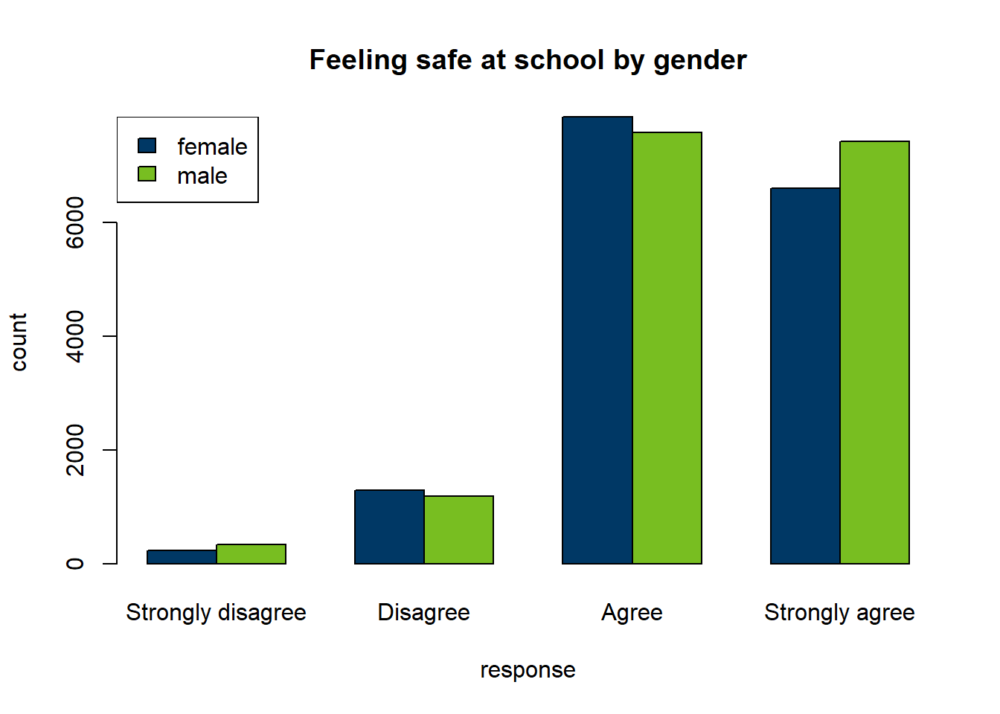
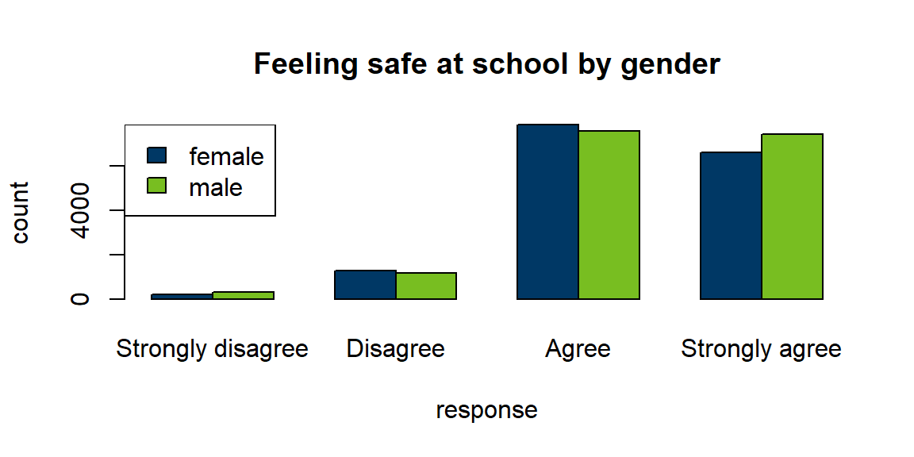

Publishing Your Results with Quarto
Reading in, displaying, and visualizing data in your HTML report
1 Introduction
The goal of this workshop is to show you how to create a reproducible report using RStudio. To write reproducible reports, you need two skills. First, you need some basic knowledge about how to format your report content. That information is covered in the crash course. Second, you need to know how to manipulate and display data within your report. This section covers how to write code blocks and read in data, and some of the tricks to make your report repeatable.
2 Set up your document
Now that you know the basics of markdown and Quarto, let’s start a fresh report. You should still have the project open that you created in the crash course. If not, open it.
Open a new Quarto file that will write to HTML. Create a new Quarto document by clicking on “File” > “New file” > “Quarto Document …”. In the dialog, select HTML, choose the Knitr engine, and uncheck the visual editor.
2.1 YAML
The YAML is always at the beginning of your document and stores the document metadata. It includes any information that affects overall formatting when your document is rendered.
Add author, subtitle, and date to the YAML. Update the metadata to look something like the code below, with your own values between the quotation marks.
Save your file.
--- title: "My title" subtitle: "My subtitle" author: "Marvellous me" date: "2025-10-16" format: html ---
2.2 Workspace
Create a “data” folder in your project.
Download an Excel file from Minnesota Student Survey Reports. Choose whichever options you want, then under “Download”, select “Summary-xls”.
The options I selected for this example report were:
- Level: State
- Name: Statewide
- Year: 2022
- Grade: Grade 5
- Category: Health
- Report: ALL
- Demographics: ALL
Your new file will have a name like “Minnesota_Student_Survey_Summary_Health_0000-00_2022.xlsx”.
Move the file you just downloaded from your downloads to the data folder in your project.
3 Crash course in code blocks
You will include several code blocks and text outside the code blocks as part of your report. The code blocks in this workshop are all for R, but code blocks can also be used for other languages, such as python.
Most of your R code will run inside code blocks. This includes reading in data, processing data, creating visualizations, and if relevant exporting data. The only inline R code is usually commands to print objects that were created in the code blocks.
A basic code block looks like this.
```{r}
# this is a basic code block
```To label your code block to make navigation in RStudio easier, add a unique tag after the r inside {r}. Follow the same rules as when naming R objects.
```{r my_unique_tag}
# this is a basic code block with a unique tag
```You can add many options to your code block. Here is a partial list of execution options. I commonly use these.
echo: whether to print the code block in the reporteval: whether to run the code in the code blockwarningandmessage: whether to print warnings and messages respectively in the report
```{r my_many_options}
#| eval: false
#| message: true
#| warning: false
# above are several common code chunk options
```4 Write your report
4.1 Install packages
We downloaded an Excel file, which R cannot read on its own. To import the file, we will use the readxl package. If you do not have it installed, install it using either the install dialog under “Tools” or the install.packages() function as shown below.
# if readxl is not installed, run this code to install it.
install.packages("readxl")The data we downloaded are messy. To put the data in a format that’s easier to use, we will use the tidyr package, which is part of the tidyverse universe, but it is not installed as part of tidyverse, and the janitor package. If you do not have them installed, install them using either the install dialog under “Tools” or the install.packages() function as shown below.
# run this code to install tidyr and janitor if needed
install.packages("janitor")
install.packages("tidyr")To create a nice table of our data, we will use the kableExtra package. To learn more about this package, visit the kableExtra Cookbook.If you do not have it installed, install it using either the install dialog under “Tools” or the install.packages() function as shown below.
# run this code to install tidyr and janitor if needed
install.packages("kableExtra")
Two ways to read functions from libraries
Often code begins with a library call, such as library(readxl). Then later the coder calls the function on its own. I have several reasons for not using that method.
- Some packages, such as “terra”, are huge and often I only want one or two functions from them.
- Some function names appear in multiple packages. If you don’t specify the package, R uses the function from the most recent package loaded.
- When loading package sets like tidyverse, keeping track of which package a function came from can be confusing, so I prefer to be explicit.
- When building an R package, loading full libraries is discouraged, so for me it’s habit not to.
Instead of loading the package first, I call the function by using the syntax package::function(). This is the method I will use in this workshop.
Use whichever method you find easiest.
4.2 Import your data
Change the value of the filename (my_file) to match the name of the file you downloaded.
# keep "data/" to read from the "data" folder when you change my_file
my_file <- "data/Minnesota_Student_Survey_Summary_Health_0000-00_2022.xlsx"
Creating R readable Excel files
When I create Excel files to read into R, I always make my data sheets computer readable, with no headers or merged cells. If I need to include human readable metadata, such as a data dictionary or contact information, I will put it alone in the first sheet, then put the data on the second sheet and add the option sheet = 2 when I import the data.
In the next code block, you will import your data. Open the file in Excel. The first row is a human-readable heading instead of true data. We want to skip that row when we import the data into R, so we will use the option skip = 1.
my_mss_data <- readxl::read_xlsx(my_file, skip = 1, sheet = 1)4.3 Prepare your data
The dataset we imported combines results for all fifth graders who took the MSS. Here, we will display some results as a bar chart and a table. The point in this exercise is to show you how to add your own R code to a report. To learn how to write more complex code, refer to our other RCamp workshops.
Subset the dataset to include only questions about safety, specifically feeling safe at school. Below, I use dplyr, a package in the tidyverse constellation of packages. If you prefer, you can also use base R.
# feel free to combine the filters and run both at once if you want
safety_qs <- dplyr::filter(my_mss_data, Report == "Perceptions of Safety")
safe_school <- dplyr::filter(safety_qs, Question == "I feel safe at school.")We want to display a bar chart of feeling safe at school by gender, but the data are messy. To put the data in a format that’s easier to graph, I am using the janitor and tidyr packages that we installed earlier.
We will transform the data in four steps, outlined below. If you are fond of tidyverse piping, feel free to use it here. If you are just learning these functions, review safe_school_tidy after running each function to notice how it has changed. To run only one line, highlight it and click the chevron next to “Run” in the upper right corner of the script window. Click “Run Selected Line(s)”.
# first, clean variable names to make them easier to work with
safe_school_tidy <- janitor::clean_names(safe_school)
# second, isolate only the variables of interest
safe_school_tidy <- dplyr::select(safe_school_tidy, question, response,
female_count, male_count)
# third, transform the data so gender is one column and count is another
safe_school_tidy <- tidyr::pivot_longer(safe_school_tidy, c(male_count, female_count),
names_to = "gender", values_to = "count")
# fourth, clean up the values in the "gender" column
safe_school_tidy <- dplyr::mutate(safe_school_tidy, gender = gsub("_count", "", gender))
Code block formatting best practice
In RStudio, you will see a vertical line at character 80 in your Quarto document, unless you deliberately changed the default. This line is important if you intend to include your code in your document. Rendered code blocks do not consistently wrap lines, so for all of your code to show up without the need for horizontal scrolling (or having your code abruptly cut off), you need to create manual line breaks like I did above.
If you do not intend to show your code, these line breaks don’t matter as much, but it is still a good practice to develop for future projects where you will need to show your code.
The last data transformation step is to convert all of our variables to numbers so they can be plotted using barplot(). In R, factors are numbers with string labels, so we will convert character variables to factors.
You may have noticed the count is a character variable that contains a comma after the thousands digit. For R to read it correctly, we will manually remove the comma, then convert the values to numeric. To review variable types before and after running the code below, use str(safe_school_tidy).
safe_school_tidy <- dplyr::mutate(safe_school_tidy,
gender = factor(gender, levels = c("female", "male")),
response = factor(response, levels = c("Strongly disagree", "Disagree",
"Agree", "Strongly agree")),
count = as.numeric(gsub(",", "", count)) # remove comma, make numeric
)4.4 Draw a chart
Now that we have prepared the data, let’s create a chart.
```{r chart_basic}
# draw the plot with MN state colors
barplot(count ~ gender + response, data = safe_school_tidy, beside = TRUE,
col = c("#003865", "#78BE21"), main = "Feeling safe at school by gender")
# add a simple legend
legend("topleft", legend = c("female", "male"), fill = c("#003865", "#78BE21"))
```
Note that we will also want the chart to be accessible, with a title, caption, and alternative (alt) text. We can customize these settings for charts, as well as height and width.
```{r chart_custom}
#| fig-width: 6 # Width for figures in inches
#| fig-height: 3 # Height for figures in inches
#| fig-align: "left"
#| fig-alt: "Chart of counts of how safe students feel at school by gender"
#| fig-cap: "Male and female students feel similarly safe at school."
# redraw the plot
barplot(count ~ gender + response, data = safe_school_tidy, beside = TRUE,
col = c("#003865", "#78BE21"), main = "Feeling safe at school by gender")
# add a legend
legend("topleft", legend = c("female", "male"), fill = c("#003865", "#78BE21"))
```
Alt text in Word
Note that rendering to Word may result in the caption being incorrectly assigned to the alt text, so you will want to verify in Word after rendering.
4.5 Add a table
To increase accessibility to the data in your chart, providing the data as text is recommended. When compiling to HTML, Quarto can create data tables that can be read properly by screen readers.
# the caption option provides a title for your table
knitr::kable(safe_school_tidy,
caption = "Table of how safe students feel at school by gender") | question | response | gender | count |
|---|---|---|---|
| I feel safe at school. | Strongly agree | male | 7428 |
| I feel safe at school. | Strongly agree | female | 6601 |
| I feel safe at school. | Agree | male | 7594 |
| I feel safe at school. | Agree | female | 7865 |
| I feel safe at school. | Disagree | male | 1192 |
| I feel safe at school. | Disagree | female | 1298 |
| I feel safe at school. | Strongly disagree | male | 338 |
| I feel safe at school. | Strongly disagree | female | 230 |
To create a more customized table, we will use the package kableExtra, which adds many customization options for the kable() function. To learn more about kableExtra, visit the kableExtra Cookbook.
We will also specify our column names with the col.names = option and column alignments with the align = option. The align = option aligns each column in order as left (l), center (c), or right (r), so “lcc” means “Left align the first column. Center-align the second and third columns.”
# the caption is wrapped in single quotes so we can use double quotes inside the caption
# the indexing after the dataset name allows us to drop the first column
knitr::kable(safe_school_tidy[,2:4],
caption = 'Table of student responses to the prompt "I feel safe at school." by gender',
col.names = c("Participant Response",
"Participant Gender", "Number of Participants"),
align = "lcc") |>
kableExtra::collapse_rows(columns = 1, valign = "top")| Participant Response | Participant Gender | Number of Participants |
|---|---|---|
| Strongly agree | male | 7428 |
| female | 6601 | |
| Agree | male | 7594 |
| female | 7865 | |
| Disagree | male | 1192 |
| female | 1298 | |
| Strongly disagree | male | 338 |
| female | 230 |
Interactive charts and tables in R
In this workshop, I am providing code to create static charts and tables. This is practical if your goal is to write a report in Word or portable document format (PDF), where images are static.
There are plenty of R packages to get started creating interactive charts and tables. Here are a few that I use. All of these are beyond the scope of this workshop.
5 Making your report reproducible
Often in my reports, the first code block of the document, above the introduction, will contain any dynamic values, such as file names, date ranges, and health outcomes of interest. That way, a month or year later, when I rerun the report, all I need to do is change values in that code block and click “Render”.
Making your report truly reproducible
When you learn more advanced R code, there are ways to name and read the latest file or derive dates of interest from the current date if you want to simply open the file and click “Render” without modifying anything.
For example, I might rewrite the code above like this. Notice that the values you might want to change, such as the category, question, and demographics, are all in one place so they are easy to revise. The static portion below them will not change. It will read in the same object names with updated values.
# changeable values
report_tag <- "Perceptions of Safety"
question_tag <- "I feel safe at school."
genders_set <- c("female", "male") # or , "total"
measure_type <- "count" # or "pct"
filter_vars <- paste(genders_set, measure_type, sep = "_")
# static code
safety_qs <- dplyr::filter(my_mss_data, Report == report_tag)
safe_school <- dplyr::filter(safety_qs, Question == question_tag)
safe_school_tidy <- janitor::clean_names(safe_school) |>
dplyr::select(question, response, dplyr::all_of(filter_vars)) |>
tidyr::pivot_longer(dplyr::all_of(filter_vars),
names_to = "gender", values_to = "value") |>
dplyr::mutate(# create factors
gender = gsub(paste0("_", measure_type), "", gender),
gender = factor(gender, levels = genders_set),
response = factor(response, levels = c("Strongly disagree",
"Disagree", "Agree", "Strongly agree")),
# modify number
value = as.numeric(gsub(",", "", value)))Then I could rerun my chart like this. Notice how the length of the vector of colors changes depending on the number of demographics I include. This way, I can use the same code whether I want to show males and females side by side or all students combined.
my_colors <- c("#003865", "#78BE21", "red")
my_colors <- my_colors[1:length(genders_set)]
barplot(value ~ gender + response, data = safe_school_tidy, beside = TRUE,
col = my_colors, main = question_tag)
legend("topleft", legend = genders_set, fill = my_colors)6 Practice exercise
Now you can try one of the exercises below.
Your turn: Writing a report
Select one of the challenges below. Copy and revise the code in the section above in a new report. Include the following items in your new report.
- Headers for report parts.
- An introduction to your report.
- A link to learn more about your data.
- A visible code block.
- At least one chart and at least one table.
- Captions and alt text that match your chart and table.
- At least one example of inline R code.
When you’re done, render your document.
Select a new MSS question and recreate the chart and table with the same demographics and measure as in the main example.
With the MSS data, try one of the following tasks.
- “I feel safe at home.” for all students combined.
- “I feel safe in my neighborhood.” for only girls.
- The same chart as in the example, showing percents instead of counts.
Write a report with your own data.
We will not do this in today’s session. Try it on your own time and ask in Tidy Tuesday meetings or the “Request for Assistance” channel if you need help.
7 RCamp links
Return to Markdown Crash Course Part 1.
Return to the RCamp main page.